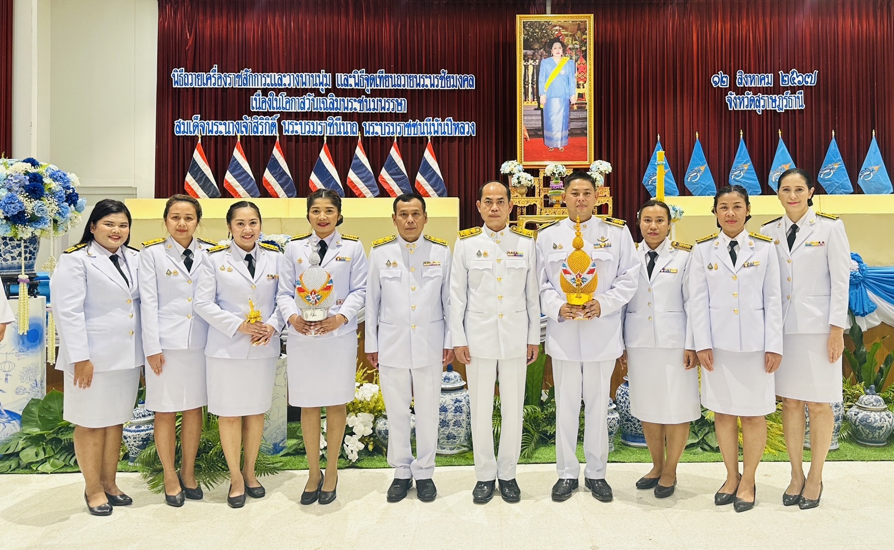

📰 ห้องข่าว
ข่าวประชาสัมพันธ์ล่าสุด

กิจกรรมการจัดการความรู้ระหว่างสำนักงานสรรพสามิตภาคที่ 8 และสำนักงานสรรพสามิตพื้นที่สุราษฎร์ธานี
นายกฤษภาส ศิริปิตุภูมิ ผู้อำนวยการสำนักงานสรรพสามิตภาคที่ 8 เป็นประธานในการจัดการความรู้ ระหว่างหน่วยงาน 2 หน่วยงาน

นักงานสรรพสามิตพื้นที่สุราษฎร์ธานี ได้ร่วมพิธีถวายราชสักการะและวางพานพุ่ม และพิธีจุดเทียนถวายพระพรชัยมงคล
วันที่ 12 สิงหาคม 2567 เวลา 17.00 น. - 20.00 น. สรรพสามิตพื้นที่สุราษฎร์ธานี พร้อมเจ้าหน้าที่ฝ่ายอำนวยการ เข้าร่วมพิธีถวายราชสักการะและวางพานพุ่ม และพิธีจุดเทียนถวายพระพรชัยมงค